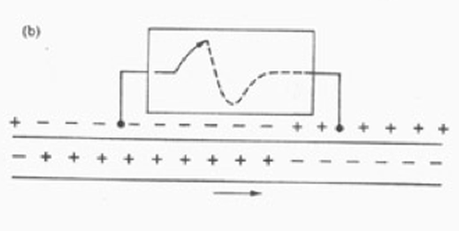
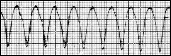
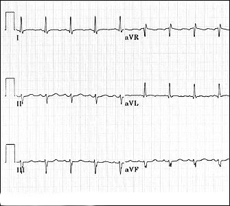

The Normal ECG
Raja Selvaraj
Additional Professor, JIPMER
Introduction and History
Introduction to the workshop
- ECG valuable diagnostic tool in a wide variety of situations
- Important skill to acquire during the training period
- Books / workshops / Online material serve as introduction / refresher
- Constant practice is a must
Workshop objectives
- Introduction to ECG - what it is, how to read, how to interpret
- Not comprehensive coverage of all aspects
- Congenital heart disease
- Electrolyte abnormalities, poisoning
- Try to cover aspects that are difficult to learn by other means
Workshop schedule
Objectives of this talk
- Genesis, recording and display of ECGs
- Normal waveforms and intervals
- Heart rate
- Axis
But first, a little history. Roughly how old is the clinical ECG ?
- 30 years
- 50 years
- 100 years
- 200 years
Centenary celebrated in 2002
Display of heart's electrical activity recorded with a galvanometer
1887 - British physiologist - Augustus Waller
Waller's dog Jimmy
1890s - Einthoven watched Waller's demonstration
1902 - Einthoven makes significant improvements
- Develops the string galvanometer
- Correction formulae
- Publishes first ECG recorded with the string galvanometer
Early rapid progress
- Einthoven records 'telecardiograms' in 1905
- Discusses commercial production
- Available commercially in 1908
ECG recording in Einthoven's time - We have progressed so much
Or have we? - Recorded ECG
Basic principles and recording
Activation wavefront and generation of electromagnetic force

Genesis of deflections
Electrocardiographic anatomy
Two chambers
Activation pattern in atrium and ventricle

Atrial activation
Ventricular activation
Recording the deflections
ECG leads
- 12 conventional leads
- Frontal plane leads / limb leads
- Horizontal plane leads / precordial leads
- Bipolar leads - I, II, III
- Unipolar leads - aVR, aVL, aVF, V1-V6
Question - How many electrodes are used for recording the 12 leads?
- 12 electrodes
- 6 electrodes
- 10 electrodes
Electrode placement

Frontal plane leads
Lead planes
Einthoven's triangle
Question - The electrodes in the triangle are equidistant because
- The ends of the limbs are equidistant from the heart
- The electrodes are placed at equal distance from heart
- Beyond a certain distance, an electrode is considered equidistant
Hexaxial reference
Horizontal plane leads
Recording - calibration / speed
Paper
Filters
Normal waveforms
Normal P wave
Normal P wave
- Axis - inferior and left
- Shape - smooth and rounded
- Amplitude - less than 2.5 mm (0.25 mV)
- Duration - less than 110 ms
Normal P wave
Normal QRS
- Image
- Axis - left inferior, towards lead II
- Duration - usually less than 100 ms
- Shape - smooth, multiphasic, no notching
- Precordial progression
Terminology
Normal QRS - Axis and progression
Normal T wave
- Axis
- similar to QRS
- Shape - asymmetric limbs, proximal shallower, blunt apex
T wave
U wave
- small rounded deflection after T wave
- same direction as T
- best seen V2-V4
- Genesis - purkinje fibers? / M cells ?
PR interval
- Normal 0.12 to 0.20 ms
- Represents impulse conduction time from sinus node to ventricle
QT interval measurement
QT interval correction
- QT interval varies with heart rate
- Comparison with a normal needs correction for this variation
- Corrected QT = QT at heart rate 60 bpm
- Methods - Bazett, Fridericia, Framingham
- Estimation errors least with HR close to 60
Bazetts method
Heart rate and Electrical axis
Heart rate
- Important measurement from the ECG
- Bradycardia and tachycardia
- Constant practice
Deriving rate
- 300 / large squares
- 1500 / small squares
Heart rate ?
Heart rate ?
Heart rate ?

Electrical axis
Concept of axis
Question - How many leads are required at minimum to determine frontal axis
- One
- Two
- Three
- Six
Determine the axis
Determine the quadrant - Leads I and aVF
Determining axis - perpendicular to most isoelectric lead
Examples
Axis
Axis
Axis
Axis
Axis

The Normal ECG
Reading an ECG
- Rhythm
- Rate
- P wave
- PR interval
- QRS width
- QRS axis
- Transition
ECG
Normal variants
Persistent juvenile pattern
Early repolarization syndrome
Summary
- ECG remains one of the most resilient investigations across time
- Knowing the basics of the genesis of the waveforms provides a better understanding of the abnormalities
- Like every other skill, reading ECGs comes and improves with regular practice